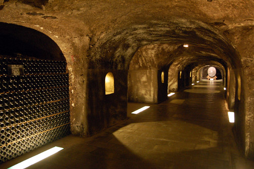

Caves Joseph Perrier, Châlons-en-Champagne
Nous voici au cœur d’une cave de 3km de long datant du IVe siècle, creusée dans d'anciennes crayères gallo-romaines. Depuis 1825, année de création de la Maison Joseph Perrier au fondateur du même nom, les caves sont des éléments phare du paysage chalonnais. Ces caves de plain-pied ont été creusées dans la colline surplombant la Maison et sont protégées par un paysage arboré qui joue le rôle de régulateur climatique naturel permettant de conserver une hygrométrie et des températures optimales pour le vieillissement des vins.
Caves Moët et Chandon
Moët et Chandon, grande maison de champagne fondée en 1743 possède les plus grandes caves de Champagne creusée dans la craie champenoise. Avec 28 km de galeries s'étendant sur plusieurs niveaux sous la grande avenue de Champagne à Epernay , les bouteilles de vin mousseux sont gardées dans la fraîcheur et l’humidité afin d’obtenir une maturation lente et unique.
Ces galeries interminables se coupent entre elles, créant un réel labyrinthe souterrain. En marchant dans la pénombre de ces galeries , on peut observer les traces des outils qui ont taillé cette craie avec une faible lueur de lumière éclairant à peine les bouteilles afin qu’elles gardent leur goût authentique.

Caves Mumm
Au cœur de 25 km de caves sous la ville de Reims, près de 25 Millions de bouteilles sont entreposées, éclairées par un joli jeu de lumière. Ainsi Mumm abrite plus de deux siècles de savoir faire et de passion. Depuis la création de la cuvée “Cordon rouge” , Mumm est reconnue dans le monde entier comme une maison d'excellence. Pour l’histoire, c’est en novembre 1876 que Georges Hermann Mumm (G.H.) fait enregistrer la dénomination « Cordon Rouge » pour une partie de ses bouteilles. Sur la bouteille, ce ruban rouge apparenté à la Légion d’honneur française est devenu le signe distinctif d’excellence incarnant l’esprit de la Maison de champagne.
Elaboré à partir d’un mariage de plusieurs crus provenant des grands terroirs de Champagne, le Cordon Rouge Mumm est composé en grande partie du Pinot Noir (45%) qui apporte structure et puissance, tandis que le Chardonnay (30%) apporte de la finesse et de l’élégance, enfin, Pinot Meunier son fruité et sa rondeur. Ainsi la cuvée cordon rouge est un champagne qui allie fruité et fraîcheur, parfait pour un apéritif. La cuvée Mumm Grand Cordon quant à elle, fait honneur aux pinots noirs, issus des meilleurs crus. Ils s’accordent à la finesse et à l’élégance des chardonnays et à la rondeur fruitée des pinots meuniers.

Caves Veuve Clicquot
En 1909, la Maison Veuve Clicquot Ponsardin acquiert des crayères à la périphérie du centre-ville de Reims. Ces carrières souterraines témoignent des différentes activités humaines qui les ont façonnées au fil des siècles. Les carriers, puis les cavistes, avaient pour tradition de laisser des marques de leur passage en y gravant des graffitis aux motifs divers. Les réfugiés civils et militaires de la Grande Guerre, eux aussi, ont confié leurs états d’âme aux parois de craie.
Dans ce labyrinthe situé à vingt mètres sous terre après cet escalier lumineux, la température des crayères, leur hygrométrie constante, ainsi que le calme qui y règne, en font le lieu idéal pour y accueillir la production de champagne. Ainsi retrouve-t-on la cuvée emblématique “Le brut Carte Jaune” reflet du vignoble de la Maison et du terroir champenois mais aussi la cuvée en l’honneur de Madame Cliquot “La Grande dame”.